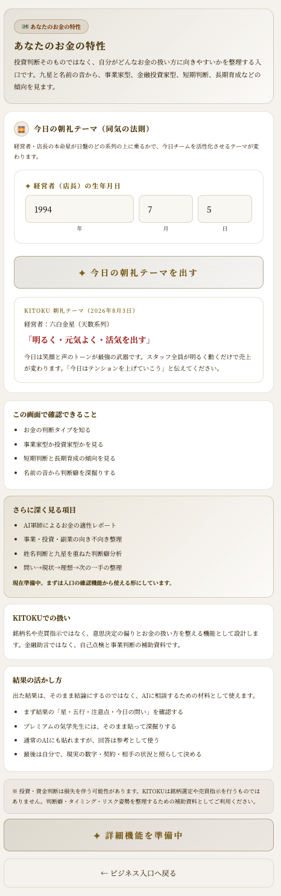
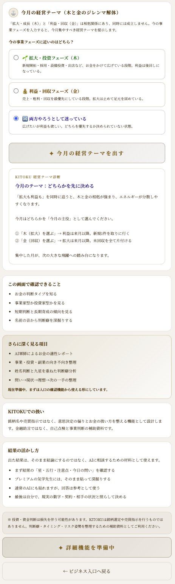

ビジネスに気学を使う
「頑張り」ではなく「環境」で結果を変える。経営者・店主・個人事業主のために、誰と、いつ、どこで、何を整えるかを、気学の地図でやさしく見直します。
社長の運勢を占う回ではありません。恐怖で判断する社名鑑定でもありません。今日から変えられる環境設計として、気学を仕事の補助線にするための回です。
気学は、環境を整える道具
気学というと「社長の運勢を占うもの」と思われがちです。でも実際にビジネスで使う気学は、もっと地味で実用的です。今日は誰に何を話すか。いつ始めるか。誰を隣に置くか。結果に直結するのに、なんとなく決めている部分を星という座標で整理します。
経営は気合いや根性の前に、環境設計で半分以上変わります。
この回では、社名や画数の強い凶判定は扱いません。詳しい判定はアプリやプレミアムの深掘りに任せ、ここでは今日から使える整え方だけを渡します。
気学は「こうしなさい」という命令ではありません。状況を見える化し、最後に本人が決めるための地図です。
今日の場の空気を作る
店やチームの空気は、リーダーの本命星に強く引っ張られます。日盤上でリーダーの星がどの系列に乗っているかを見ると、その日チームに向くテーマが分かります。
| 系列 | 今日のテーマ | 現場での一言 |
|---|---|---|
| 地数系列 2・5・8 | 確実・着実・ミスをなくす | 今日は確認を丁寧に。 |
| 天数系列 3・6・9 | 明るく元気よく | 今日は挨拶と声を明るく。 |
| 人数系列 1・4・7 | 優しさ・調和 | 今日は相手の話をよく聞く。 |
朝礼で「今日はこれを意識しよう」と添えるだけ。大きな施策より、毎日の空気を整える方が効くことがあります。

今月、何を優先するかを決める
事業の「拡大・成長」と「利益・回収」は、気学では打ち消し合う関係として見ます。両方を同時に全力で追うと、エネルギーが分散しやすくなります。
「両方大事」は間違っていません。でも同じ月に両方全力は難しい。今月はどちらを主役にするかを決めるだけで、動きに迷いがなくなります。
| フェーズ | 今月の動き |
|---|---|
| 木 | 新規・出店・採用など、未来へ伸ばす。 |
| 金 | 売上・粗利・回収など、足元を固める。 |
| 迷い | どちらかを先に決め、もう片方は来月以降へ送る。 |

大事な商談・催しの日を選ぶ
自分と相手、両方にとって調和しやすい星に縁のある店や料理を挟むと、話がまとまりやすくなります。大切なのは、相手を変えることではなく、間に入る空気を整えることです。
セミナー、展示会、新商品発表のように相手が多数の場合は、自分の同会の星を意識します。同会は、舞台を広げる星です。
| 規模 | 見る盤 | 例 |
|---|---|---|
| 〜100万円 | 日盤 | 日常の判断・短い商談 |
| 100万〜1000万円 | 月盤 | 機材・車・まとまった仕入れ |
| 1000万円超 | 年盤＋月盤 | 移転・大きな契約・長期投資 |
金額と影響の大きさに合った盤を見れば十分です。小さな判断まで重くしすぎると、動けなくなります。
開店・独立のタイミング
事務所の契約、法人登記、開業日など、引っ越しを伴わない事業のスタートは、経営者本人の線路の日を目安にします。始めたことが長く伸びやすい日として使います。
実際に店舗や事務所を構える時は、まず年盤で吉方位となる場所を選び、その上で月盤も吉となる月にオープンする、という二段階で考えます。
タイミングは後押しです。線路の日は目安として使い、最後は事業の現実と自分の判断で決めます。
右腕・チームの組み方
チームは能力だけでなく、星の噛み合わせでも組めます。すべてを一人で抱える必要はありません。誰に何を任せると、場が安定するのかを見るための補助線です。
星は採用の合否を決める道具ではありません。「この人に任せると、なぜか収まる」その理由を後から言葉にする材料です。
店舗を持つ人へ
第11回で学んだ750m以内の風水マップは、店舗にも応用できます。自宅や本店から見て、どの方位に信用を象徴する建物、にぎわい、静けさ、飲食の場所があるかを眺めます。
たとえば北西は、信用・大きな組織・由緒ある場所と関係します。銀行や大きな建物がその方位にあると、事業の信用を支える象意として見られます。
飲食店やサロンでは、席数の下1桁にも意味を見る考え方があります。ただし、この回では深入りしません。気になる方はプレミアムの詳しい鑑定で確認してください。
出店場所をすぐ変えられなくても、入口、席、光、音、香り、導線を整えることはできます。
頑張りを増やさず、環境を少し変える
事業は、社長ひとりの気合いで支えるものではありません。星の力を借りて、少し肩の荷を下ろしてください。今日は、ひとつだけ選んで整えれば十分です。